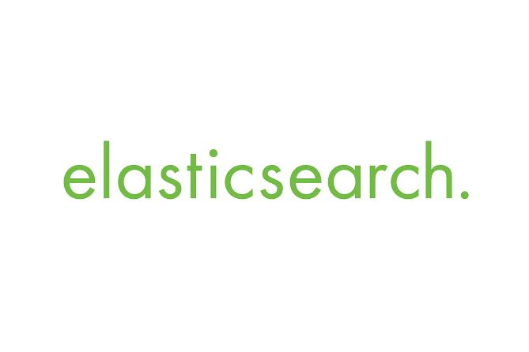

Hello World! Hallo wereld!
Rails Girls is coming to Amsterdam for the second time! Join the free, two-day crash-course to the exciting world of building web applications with Ruby on Rails.
Rails Girls Amsterdam will take place 6 & 7 June 2014!
Apply now!
Follow us via @RailsGirls_AMS for the latest updates
You learn designing, prototyping and coding with the help from our coaches.
You need your own laptop, curiosity and a sprinkle of imagination!
Want to help? We are looking for sponsors and volunteers! Shoot us a mail.
| 18.00 - 20:00 |
Installation partyCome get Rails installed by our bunch of pro’s, along with a funky looking terminal, easy-to-use texteditor and more. Bring your laptop if you can. There’ll be pizza. And drinks.Sponsors, boyfriends, girlfriends and developers that happen-to-be-in-the-neighborhood are more than welcome to join. |
|---|
| 09:30 - 10:15 |
Registration & coffee |
|---|---|
| 10:15 - 10:30 |
WelcomeOutline of the day & word from sponsors |
| 10:30 - 11:00 |
BentoboxWe will teach you some 'tech talk', using the Bentobox exercise. |
| 11:00 - 13:00 |
Hands-on, minds-on learning!Rails Girls workshop includes learning the first steps into software craftmanship, creating a fun app, in small teams. |
| 13:00 - 14:00 |
Lunch |
| 14:00 - 14:30 |
Lightning talksRails Girls Summer of Code 2014 |
| 14:30 - 16:30 |
Second part of the workshop |
| 16:30 |
Wrap-up |
Location: Publitas (Zeeburgerpad 5, Amsterdam)
Applications open: you can apply now!
Applications close: May 9th
Acceptances informed: Before May 23th
Please contact us if you'd like to support Rails Girls Amsterdam.
Zilverline provides Agile consultancy and training. We are highly passionate about software development and helping others to improve and have fun. We're currently looking for Ruby on Rails Developers. Feel free to drop by! More info here.
Jworks focuses on developing top quality enterprise Java applications and developing software with Groovy and Grails. We also offer trainings suitable for everyone. We specialize in technical, high quality trainings with experts in the community and we deliver trainings in disciplines like Test Driven Development, Agile Software Development or Domain Driven Design.
 Publitas is the easiest way for retailers to turn print catalogs into
interactive, shoppable publications on all devices. We have over 300 customers, 14 million monthly visits, 11
mad scientists, and 1 mission: revolutionize digital catalogs. Care to join us?
Publitas is the easiest way for retailers to turn print catalogs into
interactive, shoppable publications on all devices. We have over 300 customers, 14 million monthly visits, 11
mad scientists, and 1 mission: revolutionize digital catalogs. Care to join us?
 Elasticsearch is on a mission to make massive amounts of data usable for businesses everywhere by delivering the world’s most advanced search and analytics engine available. With a laser focus on achieving the best user experience imaginable, the Elasticsearch ELK stack - comprised of Elasticsearch, Logstash, and Kibana - has become one of the most popular and rapidly growing open source solutions in the market. To learn more, visit elasticsearch.com
 GitHub is the best place to share code with friends,
co-workers, classmates, and complete strangers. Over three million people use GitHub to build amazing things
together. We <3 you, GitHub!
GitHub is the best place to share code with friends,
co-workers, classmates, and complete strangers. Over three million people use GitHub to build amazing things
together. We <3 you, GitHub!
 Gitlab is open source software to collaborate on code. Manage git
repositories with fine grained access controls that keep your code secure. Perform code reviews and enhance
collaboration with merge requests. Each project can also have an issue tracker and a wiki. Used by more than
50,000 organizations, GitLab is the most popular solution to manage git repositories on-premises. And on
GitLab Cloud you can host unlimited public and private repositories for free.
Gitlab is open source software to collaborate on code. Manage git
repositories with fine grained access controls that keep your code secure. Perform code reviews and enhance
collaboration with merge requests. Each project can also have an issue tracker and a wiki. Used by more than
50,000 organizations, GitLab is the most popular solution to manage git repositories on-premises. And on
GitLab Cloud you can host unlimited public and private repositories for free.
 O'Reilly spreads the knowledge of innovators through its technology
books, online services, magazines, research, and tech conferences. Since 1978, O'Reilly has been a chronicler
and catalyst of leading-edge development, homing in on the technology trends that really matter and
galvanizing their adoption by amplifying "faint signals" from the alpha geeks who are creating the future. An
active participant in the technology community, O'Reilly has a long history of advocacy, meme-making, and
evangelism.
O'Reilly spreads the knowledge of innovators through its technology
books, online services, magazines, research, and tech conferences. Since 1978, O'Reilly has been a chronicler
and catalyst of leading-edge development, homing in on the technology trends that really matter and
galvanizing their adoption by amplifying "faint signals" from the alpha geeks who are creating the future. An
active participant in the technology community, O'Reilly has a long history of advocacy, meme-making, and
evangelism.
 Kabisa is the market leader in Ruby on Rails development in the Netherlands.
You too, can learn Ruby on Rails from our professional trainers with years of Rails experience and start
writing software in a quicker, better and more enjoyable way too. With their personal attention and
experience, you’ll acquire both the fundamental knowledge and necessary skills to start your own projects
with Ruby on Rails.
Kabisa is the market leader in Ruby on Rails development in the Netherlands.
You too, can learn Ruby on Rails from our professional trainers with years of Rails experience and start
writing software in a quicker, better and more enjoyable way too. With their personal attention and
experience, you’ll acquire both the fundamental knowledge and necessary skills to start your own projects
with Ruby on Rails.
How much does the workshop cost? Nothing, it's free! You just need to be excited!
Who is this aimed for? Women of any age with basic knowledge of working with a computer. We’ve had people of all ages taking part. Please bring your laptop.
Can men attend? Yes, but you need to be accompanied by an interested lady. Also, girls are given a priority.
I know how to program - how can I help? We’re looking for volunteers to help us through the day. We’ll all get together before the event to walk through the program we'll be delivering. Email us